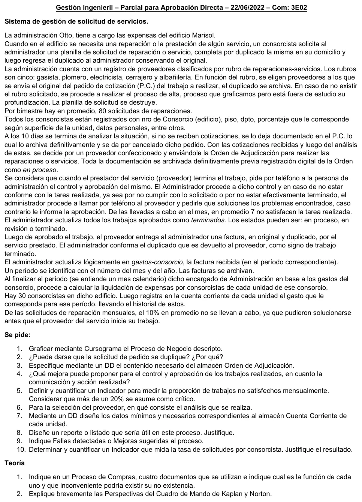

Parcial de aprobación directa, 22/06/2022
Parcial de aprobación directa, 22/06/2022
Enunciado


Preguntas con opciones
Salen de este examen, adaptadas. Dejalas para el final, porque las opciones pueden dar pistas.
- 1
En el Cuadro de Mando Integral, ¿qué perspectiva sirve de enfoque para los objetivos e indicadores de todas las demás?
Se tomó: Parciales AD 17/06/2025 y 22/06/2022, adaptada
El libro lo dice con esas palabras: los objetivos financieros sirven de enfoque para los de las demás perspectivas.
- 2
¿Qué proporciona la perspectiva de aprendizaje y crecimiento?
Se tomó: Parciales AD 17/06/2025 y 22/06/2022, adaptada
Sus objetivos son los inductores necesarios para conseguir resultados excelentes en las otras tres.
Propuesta de respuesta
Respuesta no verificada. La propuso Luta Studios con inteligencia artificial y ningún docente la revisó. Puede tener errores.
1. Cursograma
Una columna por sector, con los símbolos del resumen de un alumno que usa la materia. Los almacenes lógicos van al costado con flecha punteada, que apunta al almacén si lo actualiza y a la operación si lo consulta. Las llamadas también van punteadas, porque se mueve información y no un papel. El número chico de cada documento es el ejemplar. El alta de un rubro nuevo queda como proceso no representado, porque la narrativa dice que está fuera de estudio. Tocá el dibujo para verlo en pantalla completa.
2. ¿Se puede duplicar la solicitud?
Sí. La planilla no tiene número, no se registra en ningún almacén y se destruye apenas sale el pedido de cotización. Si dos consorcistas piden lo mismo, por ejemplo una pérdida en un palier, o uno vuelve a pedir porque no tuvo respuesta, la administración no tiene con qué compararla. Hace falta numerar la planilla y registrarla con el piso, el departamento, el rubro y una descripción, y controlar ahí antes de pedir cotizaciones.
3. DD del almacén Orden de Adjudicación
Orden_de_Adjudicacion = nro_OA + fecha + nro_consorcio + piso + dpto
+ rubro(d) + descripcion_trabajo + cod_proveedor
+ nro_PC + monto_adjudicado + estado(d)
rubro(d) = <gasista | plomero | electricista | cerrajero | albañilería>
estado(d) = <en proceso | en revisión | terminado>El proveedor va por su código, porque sus datos están en Proveedores. El número de pedido de cotización une la orden con las cotizaciones que se archivaron. El estado es el que cambia en el control y la aprobación.
4. Mejora para el control y la aprobación
Todo pasa por teléfono y no queda registro de cuándo avisó el proveedor, qué se observó ni cuándo se aprobó.
- Cuando el proveedor avisa que terminó, la orden pasa a «en revisión» con la fecha. Hoy ese estado existe, pero el proceso no dice cuándo se usa.
- El control se hace con el consorcista que pidió el trabajo, que es quien sabe si quedó bien, y firma un parte de conformidad.
- Si no está conforme, las observaciones van por escrito al proveedor, con un plazo para solucionarlas.
- La aprobación también queda por escrito. La factura se acepta solo con ese parte firmado.
5. Indicador de trabajos no satisfechos
Hay 80 solicitudes por bimestre, o sea 40 por mes. El 10 % no se lleva a cabo, así que se hacen 36. De esas, 7 no satisfacen.
Da 19.4 %, apenas por debajo del 20 % crítico. Casi uno de cada cinco trabajos hay que rehacerlo. No es crítico todavía, pero cualquier mes con un trabajo más mal hecho lo pasa, porque con 8 de 36 ya da 22.2 %. Conviene usar el dato para elegir proveedores, como se ve en la consigna 6.
6. El análisis para elegir proveedor
Se comparan las cotizaciones que llegaron en los 10 días.
- Precio del trabajo y lo que incluye, materiales y mano de obra.
- Plazo para empezar y terminar.
- Condiciones de pago.
- Antecedentes del proveedor con la administración, sobre todo cuántos trabajos no satisfechos tuvo, que es el dato de la consigna 5.
- Garantía sobre el trabajo.
Las normas de control interno de compras del resumen agregan que arriba de cierto monto se piden por lo menos 3 cotizaciones, para evitar la discrecionalidad del responsable, y que quien autoriza firma la elección.
7. DD de la cuenta corriente de cada unidad
Cuenta_Corriente = nro_consorcio + piso + dpto + periodo(e)
+ importe_expensa + (fecha_pago) + (importe_pagado)
+ saldo
periodo(e) = mes + añoHay un registro por unidad y por período, así queda el historial que pide la narrativa. El importe de la expensa sale de los gastos del período por el porcentaje de la unidad, que está en Consorcistas. El pago y su fecha van entre paréntesis porque al registrar la expensa todavía no están.
8. Reporte
Reporte mensual de gastos del consorcio por rubro. Para el administrador y para presentar a los consorcistas.
| Rubro | Trabajos | No satisfechos | Monto facturado | % del gasto del mes |
|---|---|---|---|---|
| Albañilería | ||||
| Cerrajero | ||||
| Electricista | ||||
| Gasista | ||||
| Plomero | ||||
| Total | 100 % |
Mes y año arriba, con la fecha de emisión. Rubros en orden alfabético. Sale de Órdenes de Adjudicación y de Gastos-consorcio.
Sirve porque muestra en qué se va la plata del edificio y qué rubro tiene más trabajos mal hechos. Con eso se decide a qué proveedor no volver a llamar y se justifica la liquidación de expensas ante los consorcistas.
9. Fallas y mejoras
- La planilla no se numera ni se registra, y se destruye. Se puede duplicar, como en la consigna 2, y no queda rastro del pedido original.
- El control y la aprobación son por teléfono. No queda registro, como en la consigna 4.
- El administrador hace todo. Elige el proveedor, controla, aprueba y registra la factura. Falta separar funciones.
- No hay un mínimo de cotizaciones ni se dice quién autoriza la elección.
- El 10 % de las solicitudes no se hace porque se solucionan antes. No hay forma de cancelar un pedido ya enviado a cotizar, y el proveedor cotiza o hasta empieza en vano.
- El duplicado de la factura vuelve como signo de trabajo terminado, pero la aprobación fue por teléfono. Es mejor un parte de conformidad firmado.
10. Tasa de solicitudes por consorcista
Es un coeficiente K. Cada consorcista pide en promedio más de una reparación por mes, que para un edificio es mucho. Puede haber solicitudes duplicadas, como en la consigna 2, que inflan el valor. Abierto por unidad, muestra qué departamentos concentran los pedidos.
Teoría 1. Cuatro documentos de compras
| Documento | Función | Si no existiera |
|---|---|---|
| Nota de requisición | Pide la adquisición o provisión de un bien o servicio | La compra arranca sin el pedido formal de un responsable |
| Pedido de cotización | Les pide una cotización a los posibles proveedores | No hay con qué comparar precios y la elección queda a criterio de una persona |
| Orden de compra o nota de pedido | Le pide al proveedor los bienes o servicios detallados | No hay constancia de qué se pidió ni a qué precio, para controlar lo recibido y lo facturado |
| Informe o nota de recepción | Deja constancia de que lo pedido se recibió | Se podría pagar algo que no llegó o que llegó mal |
Las funciones son las del resumen de un alumno. Lo que pasaría sin cada documento sale de sus normas de control interno de compras.
Teoría 2. Perspectivas del Cuadro de Mando
Financiera. Los objetivos financieros sirven de enfoque para los objetivos e indicadores de todas las demás perspectivas. Cada medida forma parte de relaciones de causa y efecto que culminan en la mejora de la actuación financiera.
Del cliente. Las empresas identifican los segmentos de cliente y de mercado en que han elegido competir. Permite equiparar los indicadores clave sobre clientes (satisfacción, fidelidad, retención, adquisición y rentabilidad) con esos segmentos.
Del proceso interno. Los directivos identifican los procesos más críticos para conseguir los objetivos de accionistas y clientes. Sus objetivos e indicadores suelen desarrollarse después de formular los de las perspectivas financiera y del cliente. Abarca la cadena de innovación, operaciones y servicio posventa.
De aprendizaje y crecimiento. Proporciona la infraestructura que permite alcanzar los objetivos de las otras tres perspectivas. Sus variables son las capacidades de los empleados, las capacidades de los sistemas de información, y la motivación, delegación de poder y coherencia de objetivos.
Es el texto del resumen, que sale de El Cuadro de Mando Integral, de Kaplan y Norton, páginas 59, 76, 105, 110, 139 y 140.
Respuesta no verificada. Puede tener errores.
Se armó con la página del parcial, secciones Cursograma, Diccionario de datos, Reportes, Indicadores de gestión, Fallas y mejoras, Procedimiento de compras y Cuadro de Mando Integral.
Quedó en duda: La narrativa dice que la orden de adjudicación se envía al proveedor y que toda la documentación se archiva, sin decir cuántos ejemplares tiene. Se dibuja por duplicado. Tampoco dice si las cotizaciones llegan en papel. En el indicador de la consigna 5, los 7 trabajos no satisfechos se toman sobre los 36 que se llevan a cabo por mes. El reporte de la consigna 8 va sin valores porque la consigna no pide cuantificarlo. Los cursogramas, el DD y los documentos de compras salen de material de alumnos, porque el Drive no tiene el apunte de la cátedra.
¿Cómo te fue?
Marcá cada tema del examen. Las preguntas con opciones ya se corrigieron solas.
- CursogramaCursograma, en Parcial de aprobación directa
- DDCómo viene el examen, en Parcial de aprobación directa
- IndicadoresIndicadores de gestión, en Parcial de aprobación directa
- ReportesReportes, en Parcial de aprobación directa
- MejorasFallas y mejoras, en Parcial de aprobación directa
- Cuadro de MandoCuadro de Mando Integral, en Parcial de aprobación directa
- ComprasProcedimiento de compras, en Parcial de aprobación directa